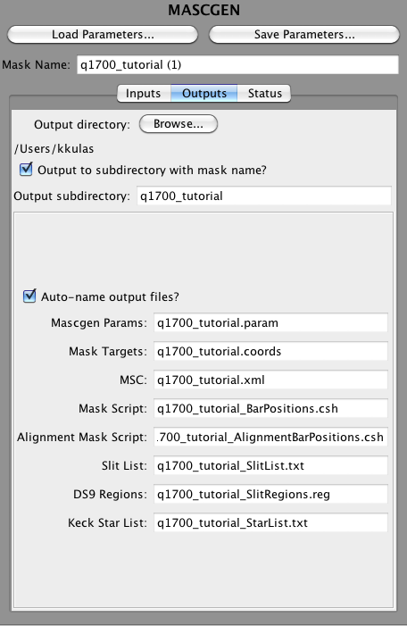

MASCGEN Outputs
The Output tab is used to specify the default names for the data products associated with the mask. See Data Products for a description. These values can be changed when saving the products to disk (see Managing Mask Configurations).
